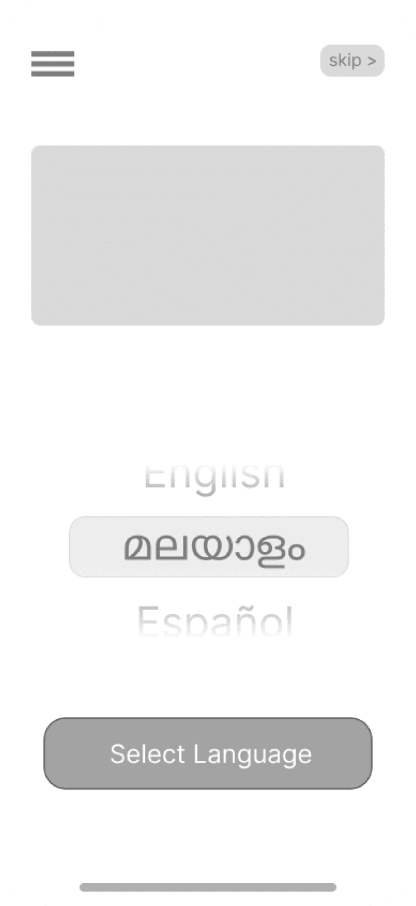

Fear of transactions
Older customers were skeptical of online payments and often depended on family members to purchase for them.
Handmade jewellery / inclusive e-commerce
A mobile-first shopping experience for a handmade jewellery business moving from Instagram DMs and flea markets into a dedicated online store.

Challenge
Mine by Min already had a close, human sales model: customers discovered jewellery through Instagram, asked questions through DMs, and met the brand at flea markets. That trust was valuable, but it did not scale cleanly into online ordering.
The core design challenge was not just building a store. It was helping a diverse local customer base feel safe signing up, setting up payment, judging handmade product quality, and placing orders independently.
The product had to feel simpler than a DM, not colder than one.
Research
Older customers were skeptical of online payments and often depended on family members to purchase for them.
Formal translations and dense UI labels made basic steps feel more intimidating than they needed to be.
Handmade jewellery needs scale, fit, material, and review details because photos alone do not communicate tactility.
Without a site or app, ordering depended on manual conversations, memory, and availability in chat.
Personas
Suma wants to buy jewellery for herself and gifts without asking her children for help. She speaks Malayalam, reads limited English, and finds payment setup overwhelming. For her, independence is part of the emotional value of the product.
Min is comfortable shopping online, but she is skeptical of manipulated images and vague reviews. She needs product scale, material clarity, and authentic details before trusting a handmade purchase.
Solution
The first interaction makes language choice clear, simple, and non-technical.
Signup, OTP, address, and payment are broken into visible steps so progress is never mysterious.
Payment setup is accessible from the homepage and supported with visual guidance for first-time users.
Product details, favourites, reviews, and cart previews reduce doubt before checkout.
Screens

Language selection, login, OTP, profile, address, payment setup, and homepage form one continuous trust-building path.
Favourites, earrings, product details, cart, and checkout success keep product confidence visible until the order is complete.
Onboarding and shopping flow structure for the mobile-first jewellery experience.
Testing
I tested the onboarding and payment setup flow with five participants aged 20-65 in remote, unmoderated sessions. The study measured how quickly users could sign up, set payment, reach the homepage, and identify where they were in the flow.
The language menu became more legible, UPI became more prominent, payment setup moved closer to the homepage, and the high-fidelity prototype used graphics, motion, and friendlier local-language copy to guide less tech-savvy customers.